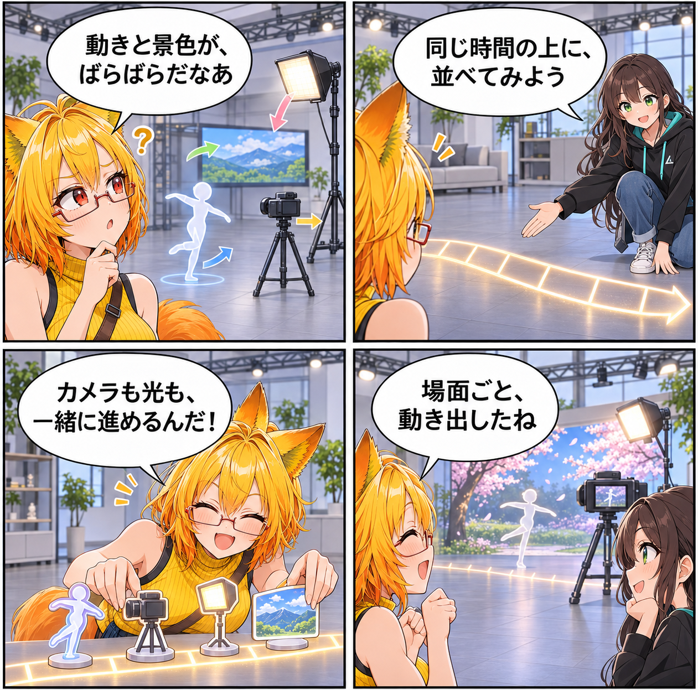

2026.11.23 / Development Log / Feature Spotlight
閑話休題：場面の流れを、ひとつの時間軸へ
新規実装の報告ではなく、VRASに既にあるVASシーケンス再生を紹介します。アバターの動き、カメラ、光、背景など、場面づくりに関わる要素をひとつの時間軸へまとめるための既存機能です。
今回は feature-spotlight（機能紹介） です。集計期間は2026-11-22 03:00:00 JSTから2026-11-23 02:59:59 JSTまで、対象はViewerの
main です。集計終了時点のHEADは c33733a41be121b814a1732df8c9eae089ace2ea、期間内コミットは0件でした。Assets/Scenes/MainScene.unity の未コミット差分は、期間内に実装された事実を確定できないため実績には含めていません。
別々の要素を、ひとつの場面として
VRASのVAS（Virtual Animation Sequence）は、シーン全体の時間進行を扱う上位のシーケンス形式です。複数のVAC、アバターやオブジェクトの配置、カメラ、ライト、環境、背景、音声などを、ひとつの時間軸に組み合わせます。
動きだけで終わらせない
VASでは、カメラのTransform、FOV、カットやブレンド、ライトと環境の変化、VBG背景の切替などを時間に沿って扱えます。局所的な動きを担うVACと、背景空間や静的なStudio Stateを担うVBGを、場面の流れとして組み合わせる役目です。
再生の範囲を守る
VASはMesh、Texture、MaterialそのものやVAC内部のBone Keyを抱え込む形式ではありません。任意コードや任意メソッド、Shell、URLの実行も扱いません。再生終了時には既定で開始直前の状態へ復元し、欠けた背景やアバターがあっても安全に停止または部分再生する方針です。
4コマの話
ろひは「動きと景色がばらばら」と困ります。ルミナはそれぞれを一本の時間軸へ置く考え方を示し、カメラとライトも同じ場面の流れに加わります。最後は、ろひが「場面ごと動き出した」と穏やかに気づく、既存機能を使った寸劇です。
まとめ
VASは、複数の要素を時間軸上で組み合わせ、シーン全体の演出を扱う既存機能です。今日は新規実装の報告ではなく、個別の動きと景色をひとつの場面へつなぐ役割を取り上げました。